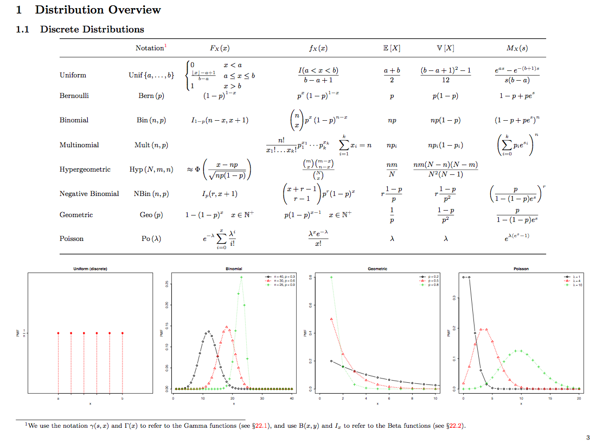
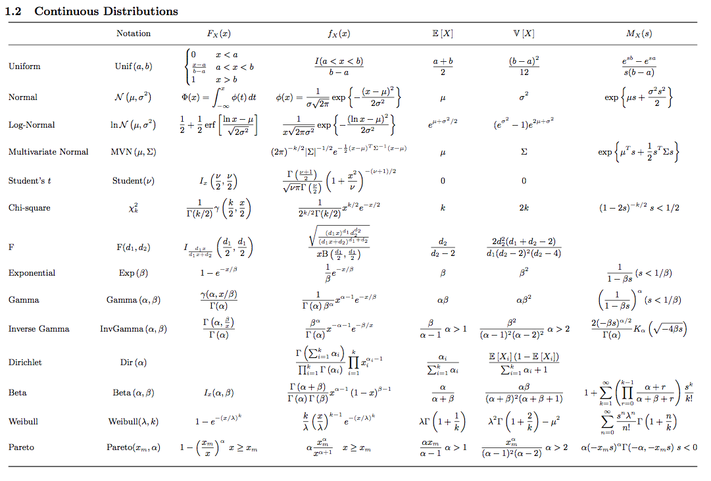

Probability and Statistics Cheat Sheet
Update (June 5, 2011): The probability and statistics cheat sheet now has it’s own page. Furthermore, I decided to rename it to cookbook because the sheer number of pages stretches the definition of cheat sheet quite a bit.
While I started to explore the many univariate probability distribution relationships last year, I created a PDF to help me remember them. This document quickly grew into a basic probability theory reference and its substantial parts evolved while I was taking the excellent course STAT 200B at UC Berkeley taught by Cari Kaufman. Today, it is more like a cookbook and helps me to swap back in the relevant context when facing statistical challenges.
The purpose of this cookbook is to bundle essential statistical knowledge with a unified notation. If you find any mistakes or have suggestions for further topics, I’d appreciate if you contact me. I will continue to add material that I deem useful.
Screenshots
 
Load Comments